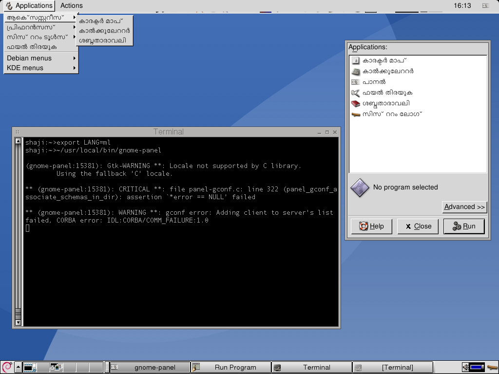
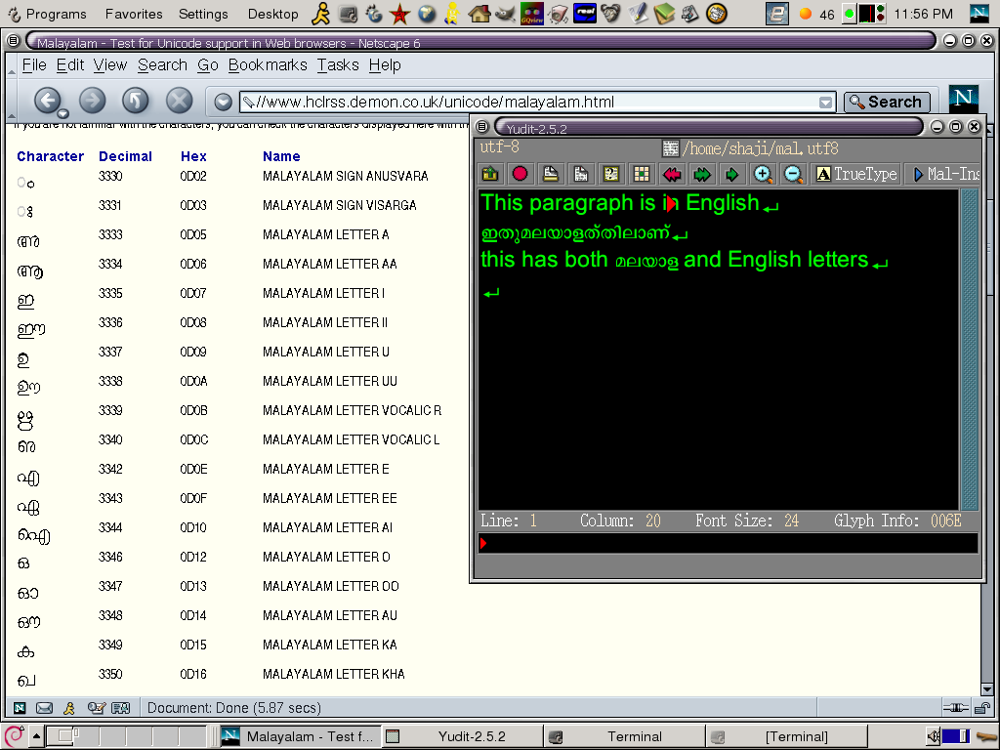
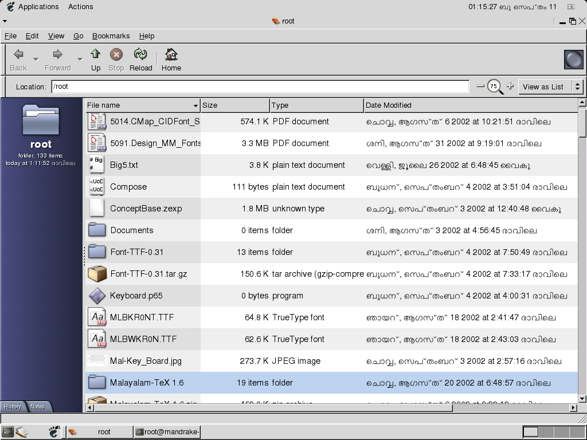
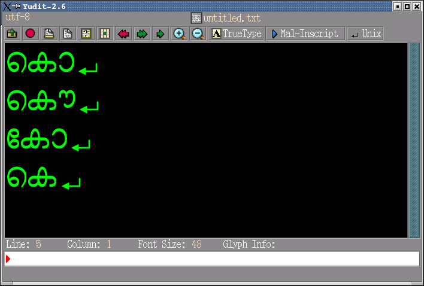
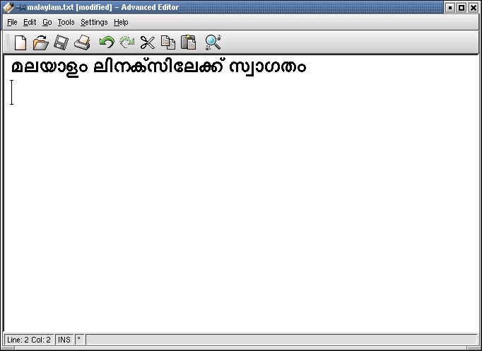
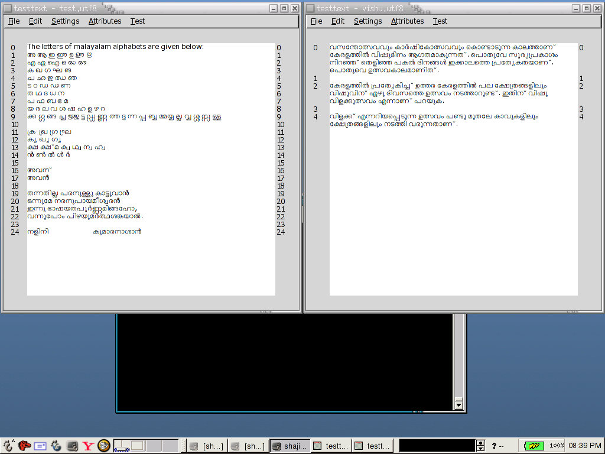
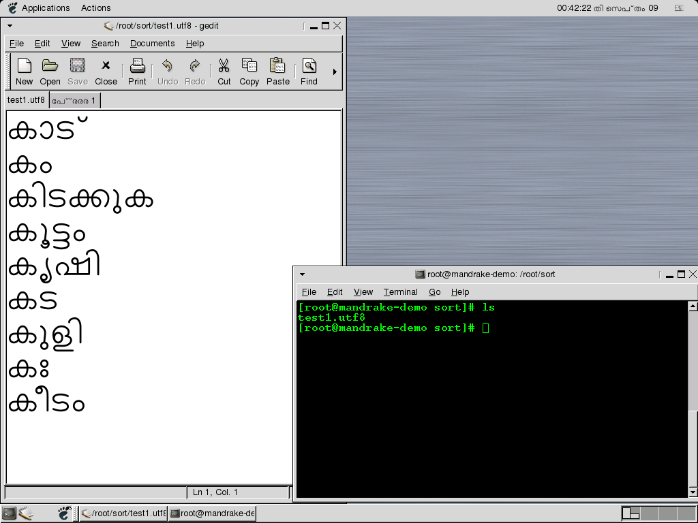
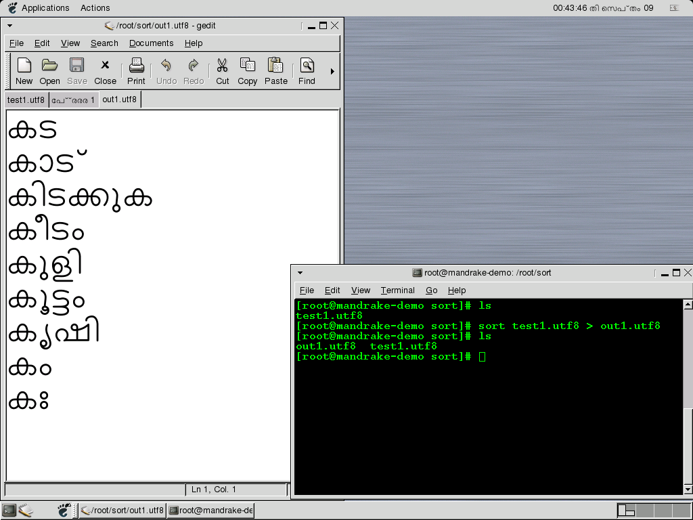
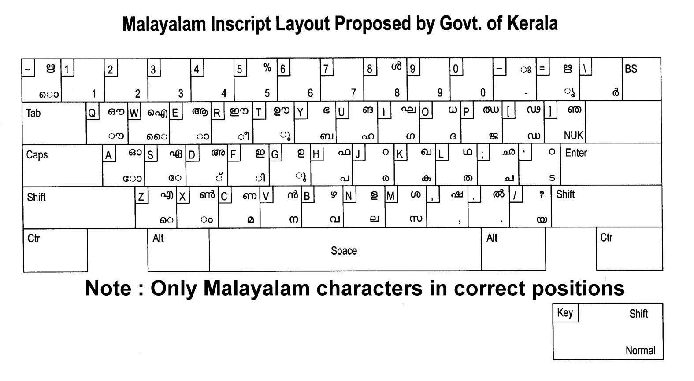

malayalamlinux.sourceforge.net, downloaded from Wayback Machine
captures dating from September 2002 to June 2003. 67 files were recovered
including HTML pages, screenshots, source code, locale files, fonts metadata,
and translation glossaries. The raw files are in the
sourceforge/ directory.
Swathanthra Malayalam Computing
===============================
'Swathanthra' is the 'free' as in freedom ('swathanthryam')
-----------------------------------------------------------
This project is now moved to
http://savannah.nongnu.org/projects/smc
-----------------------------------------------------------
Contacts:
Baiju M <baiju@freeshell.org>
This document will give you more details about Malayalam GNU/Linux Project. As any other projects, the team should be divided into different sub-groups. Mainly GNOME and KDE teams, along with that one Malayalam Language experts group. Also small teams like web maintainers, group maintainers etc.
The task of this project is not much complicated, it is just about translation. Even though some basic things are required to start the translation. First of all fonts and then tools like GTranslator and KBabel. The tools are already available from the home pages of those projects. And about fonts, there is no font available with UNICODE encoding. Until the fonts are available we can use 8-bit fonts.
1. What is Malayalam GNU/Linux?
It is the GNU/Linux OS which supports Malayalam Language. The language interface for GNOME and KDE will be Malayalam. All menu items, toolbar items, help documents etc. will be in Malayalam. Console applications like pine, emacs etc. will be in Malayalam. Also it will contain lots of applications useful for Malayalam users of GNU/Linux. Programming language interface of C, C++, Python etc. will change to Malayalam, then I/O will be in Malayalam. At last the whole computing will be in Malayalam.
2. What is the status of the project now?
Now rendering engine development, font creation (TTF, OTF, BDF etc), technical terms translation are under progress.
3. Which are the fonts available for Malayalam GNU/Linux?
Visit the Downloads section.
4. Is those fonts with UNICODE encoding?
Font encoding scheme is different from character encoding. Unicode is a Character encoding. TTF fonts we now use don't have support to deal with character encoding schemes like Unicode. We are planning to develop Open Type Fonts. Open Type Fonts support Unicode better than other encoding schemes.
5. Is there any tools available for translation?
Yes, for GNOME translation GTranslator, and for KDE translation KBabel. And lots of things can be done in GNU Emacs.
6. What is the importance of files pot, pox, po, mo?
These are the files to make changes to translate an application.
7. How can I contribute to this project?
First join the project group. And then select an application to translate. Follow the guidelines of the coordinators.
8. How can I input data into my Malayalam GNU/Linux?
Inscript based input method is supported now. Other methods are under development.
9. If I have a question about Malayalam GNU/Linux, where will I ask?
Post a message to malayalamlinux@yahoogroups.com
From HOWTO/HOWTO.txt — by Baiju M <baiju@freeshell.org>
Introduction: Malayalam is spoken by more than 35 million all around the world. They are named as 'Malayalees' and majority of them are from Kerala (The God's Own Country!) in India. The language has got a well established script with 49 characters and it is a phonetic based script. The Unicode range for these characters are from U+0D00 to U+0DFF.
Input Methods: The standard input method which is working properly is inscript based. Malayalam inscript keyboard layout is standardised by Kerala government. A transliteration based input method was also under development for GTK+ apps. Applications like Yudit and Varamozhi support transliteration based input methods.
Font: GPLed TTF and OTF fonts were available. The font was created by Jeroen Hellingman using Metafont, later N.V. Shaji converted it into TTF, and OpenType tables support was added by Baiju M. There were a total of 136 glyphs, released under the GNU General Public License.
Renderer: Pango is a font renderer for GTK+ toolkit. A Pango module for GTK+ was available. Since GTK+ toolkit is used by GNOME and lots of other applications, Malayalam font rendered properly in all GTK+ applications.
Locale: Almost all locale tables were ready for Malayalam, including LC_COLLATE (sorting order table).
Standards: Ministry of IT (Govt. of India) proposed some changes in Malayalam Unicode character set, suggesting to include 'chillus' as basic building blocks. At the time, 'chillus' were represented by three Unicode characters.
Full document: HOWTO.txt
Step-by-step instructions for adding Malayalam support to OpenOffice.org:
localedef -i ml_IN -f UTF-8 /usr/share/locale/ml_IN.UTF-8//usr/X11R6/lib/X11/locale/ml_IN.UTF-8/compose.dir with ml_IN.UTF-8 entriesexport LC_ALL=ml_IN.UTF-8Inputting Malayalam: Press both Shift keys to switch to Malayalam mode. To input "Koottaksharas", press Right Window key and then the required characters (no need to input 'chandrakala').
The project maintained translation glossaries and word lists:
Screenshots showing Malayalam rendering in various applications (2002):

Malayalam in GNOME

Malayalam text rendering

Malayalam locale dates

Malayalam in Yudit editor

Snapshot

Desktop

Before LC_COLLATE sorting

After LC_COLLATE sorting
Inscript keyboard layout:

Malayalam Inscript keyboard layout (standardised by Kerala government)
Recovered source files:
{kind=link}
{kind=link}
{kind=link}
{kind=link}
{kind=link}
{kind=link}
{kind=link}
{kind=link}
{kind=link}